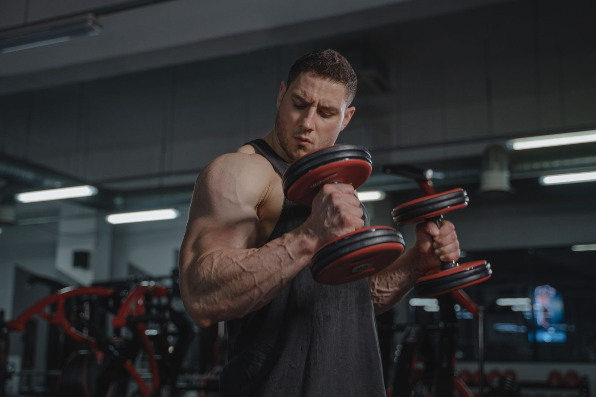

Low responder: quanto conta davvero la genetica nella crescita muscolare?
Ti alleni da mesi, segui il programma, eppure il compagno di palestra cresce il doppio. La tentazione è chiudere il discorso con una parola: genetica. Qui vedi cosa misurano davvero gli studi sugli "high responder" e i "low responder", quanto pesa il DNA e perché è difficile sapere come rispondi tu.

In breve
- Con lo stesso programma, la crescita muscolare varia moltissimo: in uno studio su 585 persone si va da −2% a +59% di sezione del bicipite.
- La genetica conta: circa metà delle differenze di forza tra persone sedentarie è attribuibile a fattori ereditari. L'altra metà no.
- Parte di quello che sembra "non rispondere" è rumore: errore di misura, variazioni giornaliere, programmi troppo brevi.
- Chi risponde poco su un parametro spesso migliora su un altro. In uno studio su 110 over 65, nessuno è rimasto senza benefici.
- Più volume aiuta una parte delle persone, ma non tutte: prima di parlare di genetica conviene verificare programma, durata e misure.
Perché un fisico finito non ti dice nulla sulla genetica
Davanti a un fisico molto sviluppato ragioniamo al contrario: partiamo dal risultato e indoviniamo la causa. Ma il risultato è la somma di anni di allenamento, alimentazione, sonno, errori corretti e costanza. Da una fotografia non si possono separare questi fattori.
Lo spunto di questo articolo è un post del coach Valerio Acri. Mette a confronto due sue foto, la prima da ventenne e la seconda dopo 24 anni di pesi, e invita a chiedersi se dalla prima qualcuno avrebbe parlato di "genetica incredibile". Il suo punto è condivisibile: la genetica conta, ma un contributo genetico non è un destino.
Quanto variano davvero le risposte all'allenamento
Gli studi più grandi confermano che le differenze tra persone sono enormi, anche con protocolli identici e supervisionati.
Nello studio FAMuSS, 585 uomini e donne hanno allenato per 12 settimane i flessori del gomito di un solo braccio. La sezione trasversa del bicipite, misurata con la risonanza magnetica, è cambiata tra −2% e +59%. La forza massimale su una ripetizione (1RM) è aumentata tra 0% e +250%.
Un'analisi finlandese su 287 adulti tra 19 e 78 anni, di cui 72 di controllo, ha trovato un aumento medio della dimensione muscolare del 4,8%. Il singolo partecipante poteva però andare da −11% a +30%. Per la forza, la media era +21,1%, con valori tra −8% e +60%. Età e sesso non spiegavano queste differenze.
Quanto pesa la genetica
Una meta-analisi giapponese ha raccolto 24 studi sull'ereditabilità della forza, con 58 misurazioni. L'ereditabilità media della forza, cioè la quota di differenze tra persone attribuibile a fattori genetici, era 0,52. Detto in modo semplice: geni e ambiente pesano più o meno allo stesso modo, e con l'età il peso dell'ambiente cresce.
Attenzione a come leggere il dato. Riguarda la forza di base in persone sedentarie, non quanto si migliora con l'allenamento. Mostra però che la biologia individuale è reale, e che non spiega tutto.
Uno studio brasiliano lo rende evidente. Venti giovani già allenati hanno lavorato per 8 settimane con una gamba su un programma progressivo classico e con l'altra su un programma che cambiava continuamente carico, volume, tipo di contrazione e recuperi. Le due gambe sono cresciute in modo quasi identico. La differenza tra una persona e l'altra, invece, era circa 40 volte più grande di quella tra le due gambe della stessa persona.
Il dato non dice che il programma non conta. Dice che tra due programmi ben costruiti la differenza è piccola, mentre le caratteristiche della persona pesano molto.
Low responder rispetto a cosa?
Qui il discorso si fa interessante. Un "low responder" è tale per una misura, una dose e una durata precise. Cambiando una di queste cose, la classificazione può cambiare.
Il volume. In uno studio norvegese, 34 persone non allenate hanno allenato per 12 settimane una gamba con 1 serie per esercizio e l'altra con 3 serie. Con 3 serie la sezione del quadricipite è cresciuta in media del 5,2%, contro il 3,7% con una serie. Ma solo 13 partecipanti su 34 hanno mostrato un vantaggio chiaro del volume maggiore sull'ipertrofia. Per gli altri la differenza era piccola o assente.
Negli allenati, uno studio brasiliano ha confrontato su 16 persone un volume standard di 22 serie a settimana con un volume pari a 1,2 volte quello che ciascuno faceva già. Il volume personalizzato ha prodotto più crescita: in media 1,08 cm² di sezione in più.
Il carico. Qui la risposta è diversa. In 27 donne intorno ai 68 anni, allenarsi a 10 o a 15 ripetizioni massime ha dato risultati simili. Tre partecipanti su quattro hanno mantenuto lo stesso status, responder o non-responder, con entrambi i carichi. Cambiare carico non ha "sbloccato" chi rispondeva poco.
La durata e l'esito misurato. Uno studio olandese su 110 over 65 lo dice già nel titolo: non esistono non-responder all'allenamento contro resistenza. Passando da 12 a 24 settimane di allenamento, le risposte positive sono aumentate. E ogni partecipante è migliorato in almeno uno tra massa magra, dimensione delle fibre, forza e capacità funzionale.
Perché è così difficile sapere come rispondi
Anche con macchinari da laboratorio, distinguere una risposta vera dal rumore è complicato. Una review pubblicata sul Journal of Applied Physiology spiega che l'errore di misura e le normali oscillazioni dell'organismo gonfiano la variabilità apparente. Per separarle servirebbero interventi ripetuti sulla stessa persona. Ricercatori brasiliani nel 2025 hanno proposto per questo un disegno con una gamba allenata e l'altra di confronto, perché molti studi non riescono a isolare la risposta vera di ciascuno.
Nello studio finlandese, confrontando i risultati con chi non si allenava, il 29% dei partecipanti rientrava tra i low responder per la massa, ma solo il 7% per la forza. Stessa persona, risposte diverse a seconda di cosa misuri.
Se è difficile in laboratorio, lo è ancora di più con lo specchio e la bilancia di casa.
Cosa dice davvero la ricerca
Lo spunto è il post di Valerio Acri. Ecco le sue affermazioni principali, confrontate con le fonti.
"La genetica conta." L'ereditabilità della forza è circa 0,52 e la variabilità tra persone è ampia anche con programmi identici.
"Contributo genetico non vuol dire determinismo." Nella stessa meta-analisi, geni e ambiente pesano in modo comparabile, e l'ambiente conta di più con l'età.
"Una risposta osservata in certe condizioni non è una caratteristica immutabile." Vale per volume e durata: più serie e più settimane cambiano il quadro per una parte delle persone. Ma cambiare il carico o variare il programma non ha cambiato lo status della maggior parte dei partecipanti.
"Se non cresci, ti serve più volume?" In media più volume dà più crescita, ma un vantaggio chiaro si vede in circa 4 persone su 10.
"Non lo sapresti nemmeno dopo due o tre anni." È plausibile, visti i limiti di misura, ma gli studi durano da 8 a 24 settimane. Su anni non ci sono dati controllati.
Come applicarlo
- Misura più di una cosa. Carichi e ripetizioni, peso, circonferenze e foto nelle stesse condizioni. Un parametro fermo non significa che tutto sia fermo.
- Ragiona per blocchi, non per settimane. Valuta i progressi su 8–12 settimane, con un programma costante.
- Controlla le basi prima della genetica. Progressione dei carichi, serie vicine al cedimento, proteine e calorie sufficienti, sonno.
- Prova ad aumentare il volume in modo graduale. Negli studi, partire dal volume che fai già e aumentarlo ha funzionato meglio di un numero standard.
- Cambia una variabile alla volta. Se modifichi tutto insieme non saprai mai cosa ha funzionato.
Domande frequenti
Come faccio a capire se sono un low responder?
Non con certezza. Serve un programma ben costruito, seguito con costanza per molti mesi e misurato su più parametri. Anche allora il risultato vale per quel programma, quel volume e quel periodo della tua vita.
Se non cresco, devo fare più serie?
Può aiutare: in media più volume porta più crescita e un volume personalizzato ha dato risultati migliori di uno standard. Però non vale per tutti. Prima verifica progressione dei carichi, intensità, alimentazione e sonno.
Quanto della crescita muscolare dipende dal DNA?
Per la forza di base l'ereditabilità media stimata è circa il 50%. Non esiste un numero preciso per la risposta all'allenamento, e le differenze dipendono anche da misure, durata e programma.
Con l'età si diventa low responder?
Negli studi citati età e sesso non spiegavano le differenze individuali. Negli over 65 seguiti per 24 settimane ogni partecipante è migliorato in almeno un parametro.
Fonti
- Hubal MJ et al., 2005. Variability in muscle size and strength gain after unilateral resistance training. Med Sci Sports Exerc 37(6):964–72. PMID 15947721
- Ahtiainen JP et al., 2016. Heterogeneity in resistance training-induced muscle strength and mass responses in men and women of different ages. Age (Dordr) 38(1):10. PMID 26767377 · DOI 10.1007/s11357-015-9870-1
- Zempo H et al., 2017. Heritability estimates of muscle strength-related phenotypes: A systematic review and meta-analysis. Scand J Med Sci Sports 27(12):1537–1546. PMID 27882617 · DOI 10.1111/sms.12804
- Damas F et al., 2019. Myofibrillar protein synthesis and muscle hypertrophy individualized responses to systematically changing resistance training variables in trained young men. J Appl Physiol 127(3):806–815. PMID 31268828 · DOI 10.1152/japplphysiol.00350.2019
- Hammarström D et al., 2020. Benefits of higher resistance-training volume are related to ribosome biogenesis. J Physiol 598(3):543–565. PMID 31813190 · DOI 10.1113/JP278455
- Scarpelli MC et al., 2022. Muscle Hypertrophy Response Is Affected by Previous Resistance Training Volume in Trained Individuals. J Strength Cond Res 36(4):1153–1157. PMID 32108724 · DOI 10.1519/JSC.0000000000003558
- Ribeiro AS et al., 2026. Responsiveness of muscle mass gain to different load intensities of resistance training in older women: A randomized crossover study. Exp Gerontol 223:113261. PMID 42551773 · DOI 10.1016/j.exger.2026.113261
- Churchward-Venne TA et al., 2015. There Are No Nonresponders to Resistance-Type Exercise Training in Older Men and Women. J Am Med Dir Assoc 16(5):400–11. PMID 25717010 · DOI 10.1016/j.jamda.2015.01.071
- Hecksteden A et al., 2015. Individual response to exercise training - a statistical perspective. J Appl Physiol 118(12):1450–9. PMID 25663672 · DOI 10.1152/japplphysiol.00714.2014
- Chaves TS et al., 2025. Within-individual design for assessing true individual responses in resistance training-induced muscle hypertrophy. Front Sports Act Living 7:1517190. PMID 39958513 · DOI 10.3389/fspor.2025.1517190
Articolo ispirato a un post di Dott. & Coach Valerio Acri (@valerio_acri). Fonti consultate tramite PubMed.
Nota: contenuto informativo, non sostituisce il parere di un medico o di un professionista qualificato.